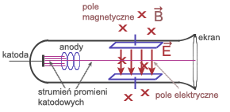
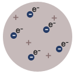
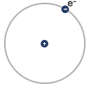
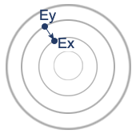
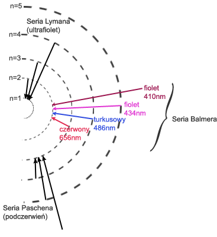
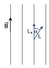
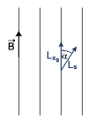
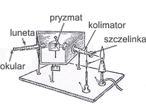
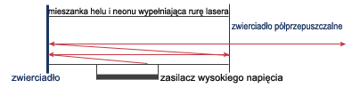

|
|||
|
| • Mechanika » Kinematyka, Dynamika, Praca, moc, energia, Grawitacja, Ruch obrotowy, Statyka, Relatywistyka • Fizyka molekularna i ciepło » Termodynamika, Gazy, Ciecze, Ciała stałe • Elektryczność i magnetyzm » Elektrostatyka, Pole elektrostatyczne, Prąd elektryczny stały, Magnetyzm, Elektromagnetyzm • Zjawiska falowe » Ruch drgający i falowy, Akustyka, Drgania i fale elektromagnetyczne, Optyka • Elementy fizyki wpółczesnej » Dualizm korpuskularno-falowy, Fizyka atomowa, Fizyka jądrowa • Astronomia » Astronomia • Zagadnienia matematyczne » Wektory, Pochodna funkcji, Logarytmy • Tablice » Jednostki wielkości fizycznych, Właściwości fizyczne, Właściwości elektromagnetyczne i falowe, Stałe fizyczne, Tablice matematyczne • O stronie » Autorzy, Bibliografia | |
|
Rozwój poglądów na budowę materii
Już w V wieku p.n.e grecki filozof Demokryt zakładał, że wszelka materia składa się z niepodzielnych i niezmiennych cząstek - atomów, a różnice jej składu chemicznego i stanu fizycznego pochodzą z różnic wielkości, postaci, liczby i porządku, tworzących ją atomów. Teoria atomistyczna uznawana była przez wielkich uczonych epoki odrodzenia, jednak odkrycia fizyków i chemików dziewiętnastego wieku stworzyły z koncepcji filozoficznej - podstawy współczesnej wiedzy o wewnętrznej budowie materii. Jej zasady były następujące: - atomy stanowią elementarne, niepodzielne cząstki materii - istnieje tyle rodzajów atomów, ile jest pierwiastków chemicznych, przy czym każdy pierwiastek charakteryzuje się określoną masą atomową - związki chemiczne powstają przez połączenie atomów różnych pierwiastków w prostych stosunkach liczbowych Jednakże późniejsze badania nie potwierdziły założeń o niepodzielności atomu i rzuciły światło na jego budowę wewnętrzną.
Do doświadczenia Joseph Thomson użył szklanej rury z umocowaną z jednej strony katodą. Wokół rury wytworzono pole elektryczne i pole magnetyczne.  Pole magnetyczne odchyla cząstki w górę. Tak dobrano natężenie pola elektrycznego i natężenie pola magnetycznego, by cząstki poruszały się bez zmiany kierunku. Siła elektrostatyczna zrównoważyła się z siłą Lorentza. Wyłączono pole elektryczne. Pole magnetyczne zakrzywiało tor ruchu cząstek. Poruszały się po łuku, więc siła Lorentza pełniła rolę siły dośrodkowej. Zamiast prędkości podstawiamy wcześniej wyliczony iloraz: Obliczony stosunek okazał się 1000 razy większy niż taki stosunek dla jonu wodoru (najmniejszej znanej wówczas cząstki). Ładunki q obu cząstek były równe, więc masa cząstek odkrytych przez Thomsona była ponad 1000 razy mniejsza od masy jonu wodoru. Te cząstki nazwano elektronami. BUDOWA ATOMU WEDŁUG THOMSONA (model rodzynkowy)  Według Thomsona atom był wypełniony substancją o ładunku dodatnim, a w niej "zanurzone" były elektronu. Ernest Rutherford prowadził doświadczenia, polegające na bombardowaniu cienkiej folii ze złota cząstkami Obserwacje te doprowadziły fizyka do wniosku, iż cały ładunek dodatni atomu skupiony jest na niewielkich obszarze zwanym jądrem atomowym, a wokół niego krążą elektrony. MODEL PLANETARNY BUDOWY ATOMU  Taki model budowy atomu kłóci się jednak z zasadami fizyki klasycznej, gdyż ładunek poruszający się po linii krzywej emituje promieniowanie, czyli elektron traciłby energię. POSTULATY BOHRA I. Elektron krąży wokół jądra po orbicie kołowej, ale tylko takie orbity są dozwolone, na których moment pędu elektronu równy jest całkowitej wielokrotności stałej . L - moment pędu II. Elektron krążąc po dozwolonej orbicie nie traci energii (nie emituje energii). Energia wysyłana jest, gdy elektron przeskakuje z wyższej orbity na niższą.  Wyprowadźmy wzór na promień kolejnych orbit. Siła Coulomba pełni wówczas rolę siły dośrodkowej: Zamiast prędkości podstawiamy wzór uzyskany przy I postulacie Bohra: Zamiast stałej wstawiamy iloraz : Uzyskaliśmy wzór na promień kolejnych orbit. Sprawdźmy, jaką energię posiada elektron na orbicie: Do wzoru na energię kinetyczną potrzebujemy znać wartość prędkości, więc wyprowadzamy wzór na tą wielkość porównując siłę Coulomba z siłą dośrodkową: Uzyskaną wartość podstawiamy do wzoru na energię kinetyczną: Energia całkowita składa się z energii potencjalnej i energii kinetycznej: Podstawiamy do wyprowadzenia wcześniej uzyskany wzór na promień orbity: Rozważmy zmianę energii, gdy elektron przeskakuje z orbity wyższej na niższą: Rozpatrujemy orbity według wcześniej wyprowadzonego wzoru: i uzyskujemy: Zamiast iloczynu przed nawiasem wstawiamy stałą zwaną stałą Rydberga: i mamy: WIDMO ŚWIATŁA WODORU Bohr analizował promieniowanie emitowane przez atomy pobudzone bodźcami fizycznymi takimi, jak: wysoka temperatura lub łuk elektryczny. Wzbudzone w ten sposób atomy wysyłają promieniowanie, które można zobaczyć przy pomocy metod analizy spektroskopowej. Promieniowanie jest charakterystyczne dla danego rodzaju atomów. Nosi nazwę widma i składa się z pasm promieniowania o określonej długości fali, co w świetle widzialnym można zobaczyć jako oddzielne pasma o różnej barwie.  Na podstawie widma atomu wodoru można stwierdzić, że wzbudzony atom wysyła jedynie pewne długości światła. Widmo to nie jest ciągłe, jest dyskretne - przyjmuje jedynie niektóre wartości długości fal. Bohr dostrzegł, że stosowanie dotychczasowej teorii elektrodynamiki C. Maxwella nie pozwala wytłumaczyć nieciągłości widma atomowego. Do tej pory bowiem, teoria budowy atomu dopuszczała, by elektrony poruszały się wokół atomu na orbitach o dowolnych promieniach. Zatem przejście elektronu z jednej na inną orbitę prowadziłaby do emisji lub absorpcji promieniowania o dowolnej długości fali tworząc widmo ciągłe. Dodatkowo, zgodnie z zasadami klasycznej elektrodynamiki, elektrony musiałyby tracić energię, co z kolei powodowałoby zmniejszanie się promienia orbity elektronu i w efekcie jego spadek na powierzchnię jądra. Atomy takie musiałyby być nietrwałe. Współczesny model budowy atomu bierze pod uwagę falowe własności cząstek. Z poruszającym się w atomie elektronem związana jest fala materii (jest ona falą stojącą). Fala ta jest opisana tzw. funkcją falową. W związku z tym, że w mechanice kwantowej nie ma pojęcia toru ruchu, to falowy model budowy atomu odrzuca pojęcie orbity, możemy mówić jedynie o prawdopodobieństwie znalezienia elektronu w danym miejscu. n - główna liczba kwantowa
Powłoki są oznaczane, licząc od jądra atomowego, kolejnymi literami: K, L, M, N, O, P, Q. Największa liczba elektronów N na pierwszych czterech orbitach określana jest wzorem: Każdy elektron poruszający się po orbicie w atomie posiada orbitalny moment pędu L: l - orbitalna liczba kwantowa, która przyjmuje wartości:
Podpowłoki oznaczane są małymi literami: s, p, d, f, g. Rzutujemy moment pędu na kierunek linii pola magnetycznego:  Zrzutowany moment pędu zależy od magnetycznej liczby kwantowej: przyjmującej wartości: Elektron w atomie posiada dodatkowy moment pędu, tzw. spin. - własny moment pędu  Magnetyczna spinowa liczba kwantowa wynosi: ZASADA PAULLIEGO
Analiza widmowa
Każdy pierwiastek wysyła charakterystyczne tylko dla siebie długości promieniowania (odkryli to Kirchhoff i Bunsen). Analizując dane promieniowanie można określić jaki pierwiastek to promieniowanie wyemitował.
Do analizy widmowej używany jest spektroskop.  Promieniowanie rentgenowskie
Badając wyładowania w gazach rozrzedzonych, niemiecki fizyk Roentgen odkrył niewidzialne dla oka promieniowanie, które nazwano promieniowaniem rentgenowskim (promieniowaniem X). Jest to promieniowanie elektromagnetyczne o niewielkiej długości fali, czyli o bardzo dużej częstotliwości. Powstaje ono w wyniku bombardowania płytki metalowej strumieniem pędzących z dużą prędkością elektronów. Teoria kwantów tłumaczy to zjawisko oddziaływaniem pola elektrycznego jąder atomów metalu na poruszające się elektrony, w wyniku czego ulegają one zahamowaniu, zaś energia hamowania uwalnia się w postaci fotonów promieniowania rentgenowskiego, zgodnie z zasadą zachowania energii. WŁAŚCIWOŚCI PROMIENIOWANIA RENTGENOWSKIEGO
Zjawisko Comptona
Korpuskularna natura fal elektromagnetycznych ujawnia się chyba najpełniej w zjawisku rozpraszania fal elektromagnetycznych na swobodnych elektronach, nazywanym zjawiskiem Comptona. Zjawisko to polega na zmianie długości fali promieniowania rozproszonego w porównaniu z długością fali promieniowania padającego. Najprostszym sposobem zrozumienia tego zjawiska jest rozpatrzenie zderzenia elektronu z fotonem jako zdarzenia sprężystego dwóch cząstek, z których jedna (elektron) początkowo spoczywała. W wyniku takiego zderzenia foton oddaje elektronowi część swojej energii i pędu. Energia fotonu rozproszonego jest więc mniejsza od energii fotonu padającego, zatem długość fali fotonu rozproszonego powinna być większa od długości fali fotonu padającego. Przesunięciem Comptona nazywamy różnicę: gdzie: - długość fali fotonu rozproszonego Przesunięcie Comptona zależy od kąta rozproszenia: Zasada działania lasera
Pierwszy laser, którego nazwa pochodzi od pierwszych liter angielskiego zwrotu Light Amplification by Stimulated Emission of Radiation, co w polskim tłumaczeniu brzmi "Wzmocnienie światła przez wymuszoną emisję promieniowania" zbudowany został dopiero w 1960 roku przez T. Maimana. Działanie lasera opiera się na dwóch zjawiskach: inwersji obsadzeń i emisji wymuszonej. Emisja wymuszona zachodzi, gdy atom wzbudzony zderza się z fotonem o takiej częstotliwości, że jego energia kwantu jest równa różnicy energii poziomów między stanem wzbudzonym a podstawowym. Foton uderzający nie ulega pochłonięciu, ale przyspiesza przejście atomu ze stanu wzbudzonego do podstawowego i dlatego z atomu wylatują w tym samym kierunku dwa spójne, to znaczy zgodne w fazie fotony o tej samej energii, więc i częstotliwości. Aby mogła zachodzić w dużych ilościach emisja wymuszona należy w ośrodku wzmacniającym stworzyć odpowiednie warunki (spowodować, by więcej elektronów było w stanie wzbudzonym niż w stanie podstawowym). Taki proces nosi nazwę inwersji obsadzeń (odwrócenia obsadzeń). Odwrócenie obsadzeń uzyskuje się za pomocą oświetlenia światłem (pompowanie optyczne), innym laserem, światłem błyskowym, wyładowaniem prądu w gazach, reakcjami chemicznymi albo wykorzystując rekombinację w półprzewodnikach. Poziom metastabilny jest to poziom wzbudzony, na którym czas przebywania elektronu jest dostatecznie długi by zaszła inwersja obsadzeń. Wzmacniacz laserowy zamienia się w generator, gdy ośrodek wzmacniający zostanie umieszczony w rezonatorze. Wówczas promieniowanie wprowadzone wzdłuż osi rezonatora odbija się od zwierciadła umieszczonego na jednym końcu rezonatora oraz od półprzeźroczystego zwierciadła na drugim końcu. Pomiędzy zwierciadłami fale są wzmacniane wskutek emisji wymuszonej. Promieniowanie wychodzi z rezonatora przez półprzeźroczyste zwierciadło w postaci spójnej, monochromatycznej, równoległej wiązki światła o dużej mocy. Emitowana wiązka jest doskonale równoległa, bowiem fale, które nie wędrują tam i z powrotem między zwierciadłami, szybko uciekają na boki ośrodka drgającego bez wzmocnienia.  Rodzaje laserów:
Lasery znalazły wiele zastosowań; są na przykład używane do spawania, w medycynie np. chirurgii, holografii, drukarkach, telekomunikacji optycznej oraz do odczytywania Informacji cyfrowej.
|
| Copyright © 2003- fizyka.kopernik.mielec.pl |